▴
FISH
Freshwater Fish
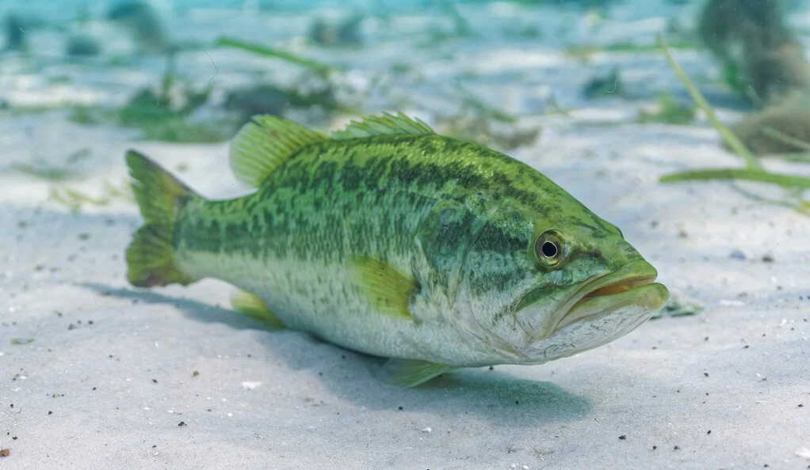
Bass
Bass are a diverse group of fish found in freshwater and marine environments. Popular among anglers, species like the largemouth and smallmouth bass are highly prized for sport and food. Largemouth bass thrive in warm, vegetated waters, while smallmouth bass prefer clearer, faster-moving streams. Both are opportunistic feeders, preying on insects, crustaceans, and smaller fish. They play a crucial role in their ecosystems as top predators. Conservation efforts are essential to maintain healthy populations, as they are sensitive to pollution and habitat loss. Regulations help ensure sustainable bass fisheries for future generations.
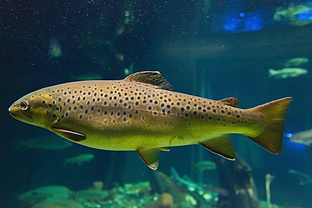
Trout
Trout are freshwater fish belonging to the Salmonidae family, highly valued by anglers and gourmets alike. Species like rainbow, brown, and brook trout are renowned for their beauty and fighting spirit. They thrive in cool, clear streams and lakes, often found in mountainous regions. Trout are opportunistic feeders, consuming insects, crustaceans, and small fish. They play a crucial role in their ecosystems, serving as both predator and prey. Conservation and habitat protection are vital for maintaining healthy trout populations, as they are sensitive to pollution and environmental changes. Stocking programs and fishing regulations help ensure their sustainability.
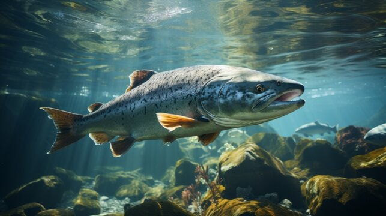
Salmon
Salmon are anadromous fish, meaning they are born in freshwater, migrate to the ocean, and return to freshwater to spawn. They are known for their remarkable homing instinct, often returning to the exact stream where they were hatched. Salmon are a crucial part of both marine and freshwater ecosystems, serving as a key food source for many animals, including bears, eagles, and humans. They are also culturally significant to many Indigenous peoples. Salmon are rich in omega-3 fatty acids, making them a healthy dietary choice. However, they face threats from overfishing, habitat loss, and climate change.

Catfish
Catfish are a diverse group of ray-finned fish known for their prominent barbels, which resemble a cat's whiskers. They inhabit freshwater environments worldwide, though some species are found in coastal waters. Catfish are bottom dwellers, often feeding on a variety of food sources, including algae, smaller fish, and detritus. They play a vital role in aquatic ecosystems by recycling nutrients. Popular in culinary traditions around the world, catfish are farmed extensively due to their rapid growth and adaptability. Despite their resilience, catfish populations can be affected by pollution, habitat destruction, and climate change, highlighting the need for sustainable management.
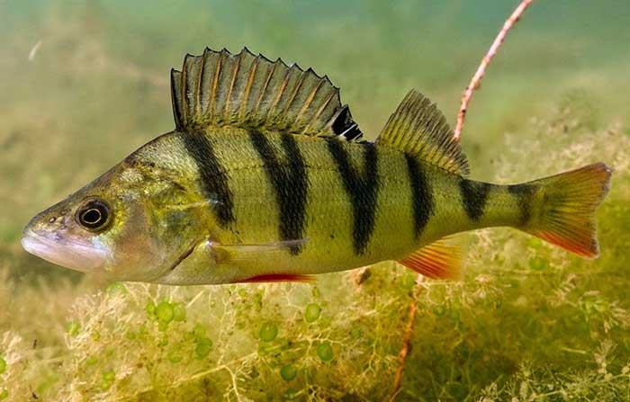
Perch
Perch are a group of freshwater fish found primarily in lakes, rivers, and streams across the Northern Hemisphere. Recognized by their two dorsal fins and distinctive greenish-yellow coloring with dark vertical bars, perch are popular among anglers for their spirited fight and tasty flesh. They play a significant role in their ecosystems as both predators and prey, feeding on smaller fish and insects while being targeted by larger fish and birds. Perch are adaptable to various environments but can be sensitive to changes in water quality and habitat. Sustainable fishing practices are essential to maintain their populations and aquatic health.
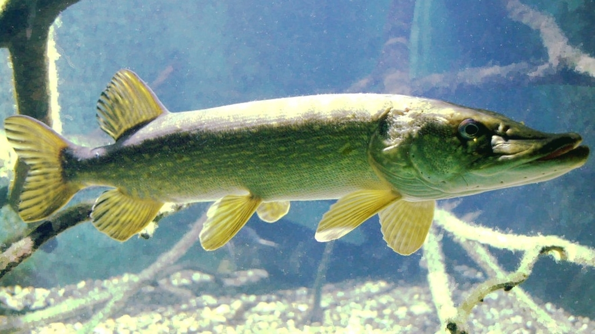
Pike
are large, predatory freshwater fish found in lakes, rivers, and streams across the Northern Hemisphere. Known for their elongated bodies, pointed snouts, and sharp teeth, they are adept hunters, preying on fish, amphibians, and occasionally small mammals and birds. Pike are solitary and highly territorial, often lurking in vegetation to ambush their prey. They are popular among sport fishers due to their size and aggressive nature. Pike play a crucial role in controlling fish populations and maintaining ecological balance. However, they can become invasive outside their native range, posing a threat to local species and ecosystems.
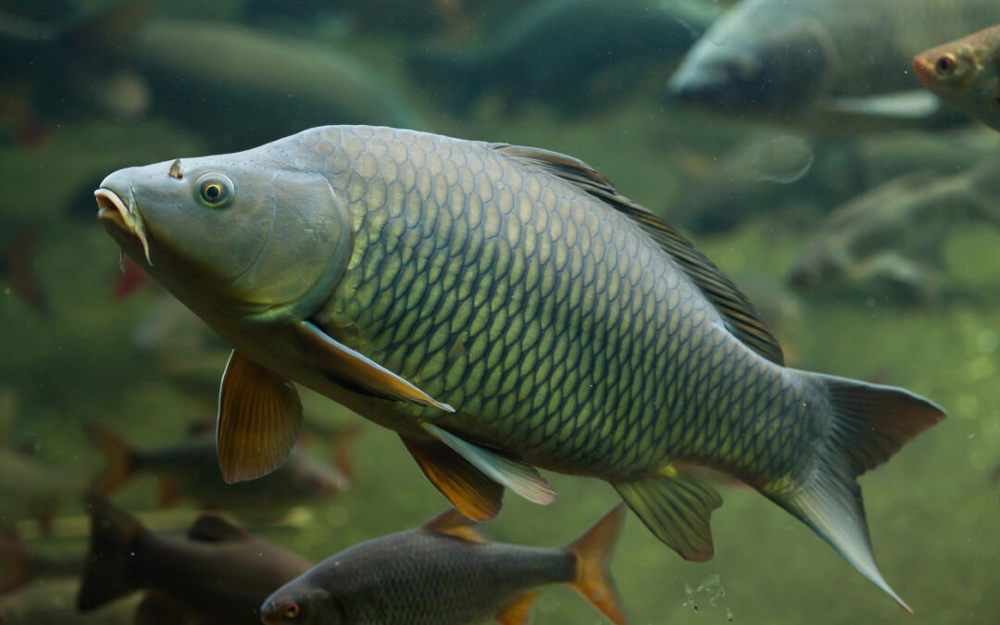
Carp
Carp are freshwater fish belonging to the family Cyprinidae, native to Europe and Asia. They are known for their hardiness, adaptability, and ability to thrive in diverse environments, including rivers, lakes, and ponds. Carp are omnivorous, feeding on plants, insects, and small crustaceans. They are also significant in aquaculture and are commonly farmed for food. Additionally, carp hold cultural importance in various regions, such as in East Asian cuisine and as ornamental fish in the form of koi. However, their introduction to non-native waters can lead to ecological issues, as they often outcompete local species and disrupt habitats.
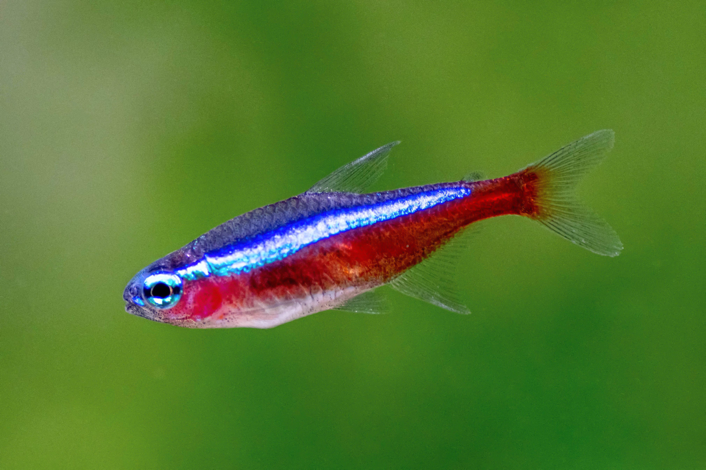
Tetras
Tetras are small, colorful freshwater fish from the family Characidae, native to Central and South America. Popular in aquariums for their vibrant hues and peaceful nature, they are schooling fish, often kept in groups to mimic their natural habitat. Tetras come in various species, such as neon, cardinal, and black skirt tetras, each showcasing unique colors and patterns. They thrive in well-planted tanks with stable water conditions. Their diet consists of flake food, brine shrimp, and other small invertebrates. Due to their easy care and striking appearance, tetras are a favorite among both novice and experienced aquarium enthusiasts.
Saltwater Fish
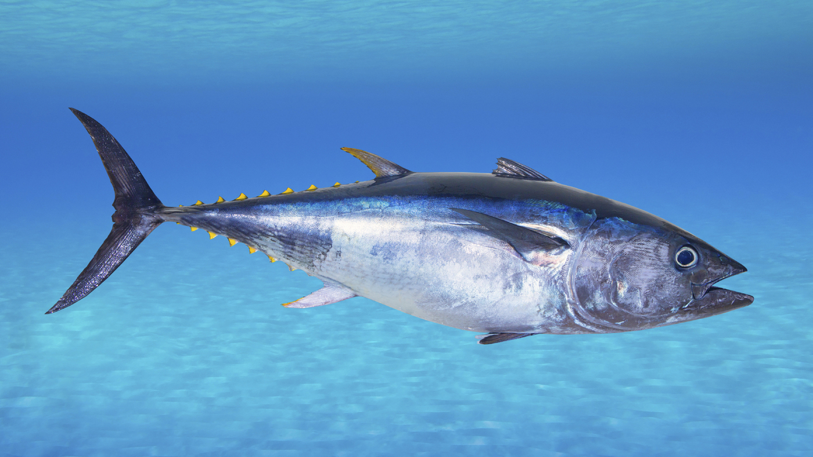
Tuna
Tuna are large, fast-swimming fish found in warm ocean waters, belonging to the family Scombridae. They are known for their streamlined bodies, powerful swimming abilities, and migratory behavior. Popular species include bluefin, yellowfin, and albacore tuna. Tuna are apex predators, feeding on smaller fish and invertebrates. They are highly valued for their meat, particularly in sushi and sashimi, and are a significant part of commercial and recreational fishing industries. However, overfishing has led to concerns about the sustainability and conservation of tuna populations. Efforts are ongoing to manage and protect tuna stocks to ensure their long-term viability in the wild.
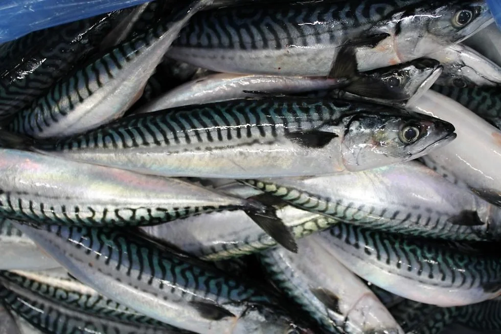
Mackerel
Mackerel are a group of fast-swimming, migratory fish in the family Scombridae, commonly found in temperate and tropical oceans. Known for their streamlined bodies and distinctive vertical stripes, mackerel are efficient predators, feeding on plankton, crustaceans, and small fish. They are a popular choice in both commercial and recreational fishing due to their flavorful, oily flesh, which is rich in omega-3 fatty acids. Mackerel are often consumed fresh, smoked, or canned. Despite their abundance, some mackerel species face overfishing pressures, prompting conservation efforts to ensure sustainable management and prevent population decline in various regions.
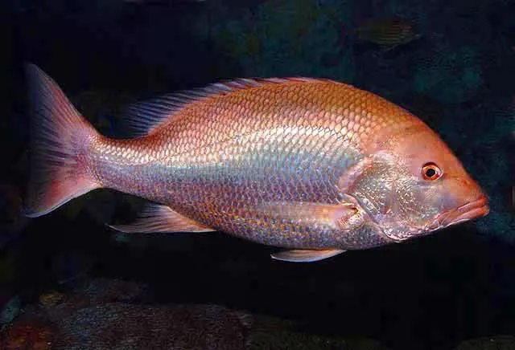
Snapper
Snapper are a diverse group of predatory fish belonging to the family Lutjanidae, commonly found in warm coastal waters worldwide. They are highly prized for their firm, flavorful meat and are popular in both commercial and recreational fishing. Snapper species, such as the red snapper and mangrove snapper, are recognized for their vibrant colors and distinctive profiles. They inhabit coral reefs, rocky outcrops, and mangroves, feeding on fish, crustaceans, and mollusks. Snappers play a vital role in marine ecosystems, but overfishing and habitat destruction pose significant threats to their populations. Sustainable fishing practices are crucial to preserving these valuable species.
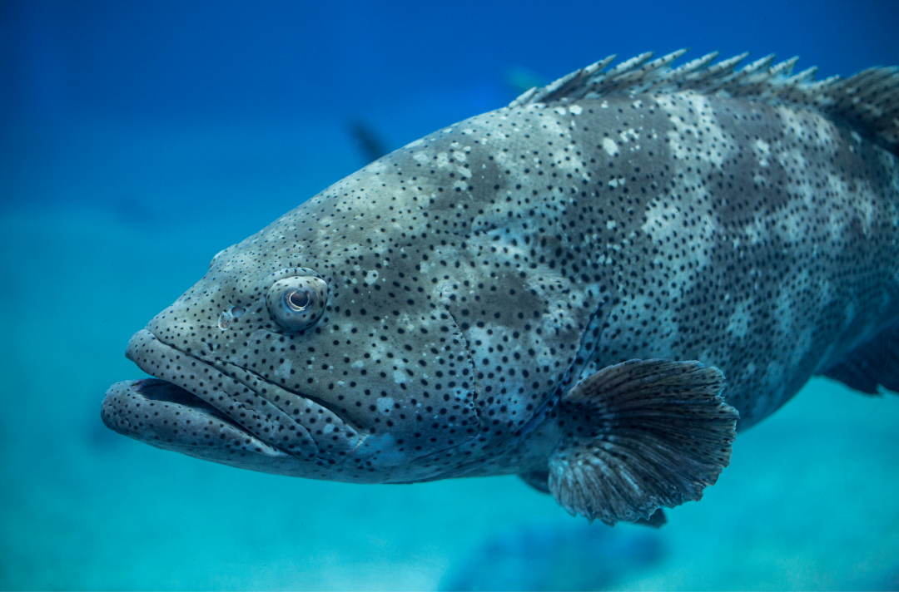
Grouper
Grouper are large, robust fish belonging to the subfamily Epinephelinae within the family Serranidae. They are primarily found in warm, tropical waters around coral reefs and rocky bottoms. Known for their stout bodies and large mouths, groupers are powerful predators, feeding on fish, octopuses, and crustaceans. Species like the goliath grouper and Nassau grouper are highly valued in commercial and recreational fishing for their size and meat quality. Grouper populations are vulnerable to overfishing due to their slow growth and late maturity. Conservation efforts, including fishing regulations and marine protected areas, are essential to ensure the sustainability of grouper species.
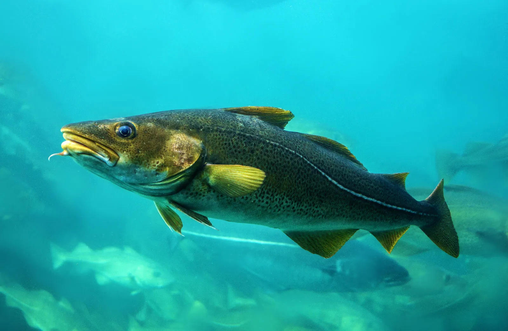
Cod
Cod are cold-water fish from the family Gadidae, commonly found in the North Atlantic. Renowned for their white, flaky meat, cod are a staple in many cuisines, particularly in dishes like fish and chips. They are bottom-dwellers, often inhabiting deep waters and feeding on smaller fish, crustaceans, and invertebrates. Key species include Atlantic cod and Pacific cod. Cod have been heavily fished for centuries, leading to significant population declines and prompting strict fishing regulations and conservation efforts. Sustainable fishing practices and monitoring are critical to ensuring cod populations recover and remain viable for future generations. Cod liver oil is also valued for its nutritional benefits.
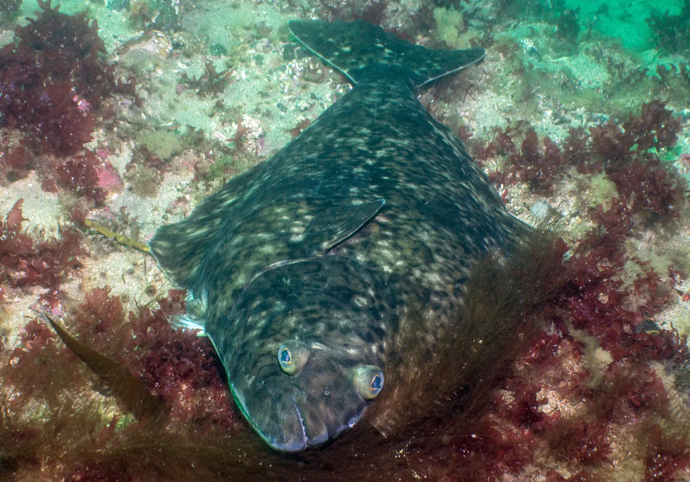
Halibut
Halibut are large flatfish belonging to the family Pleuronectidae, found in the North Atlantic and North Pacific oceans. They are known for their distinctive asymmetrical shape, with both eyes located on one side of their body. Halibut are prized for their firm, white flesh, which is popular in various culinary dishes. They are apex predators, feeding on fish, squid, and crustaceans. Halibut can grow to impressive sizes, with some individuals exceeding 500 pounds. Due to their long lifespan and slow growth, halibut are vulnerable to overfishing. Sustainable management practices, including quotas and size limits, are essential to protect halibut populations.
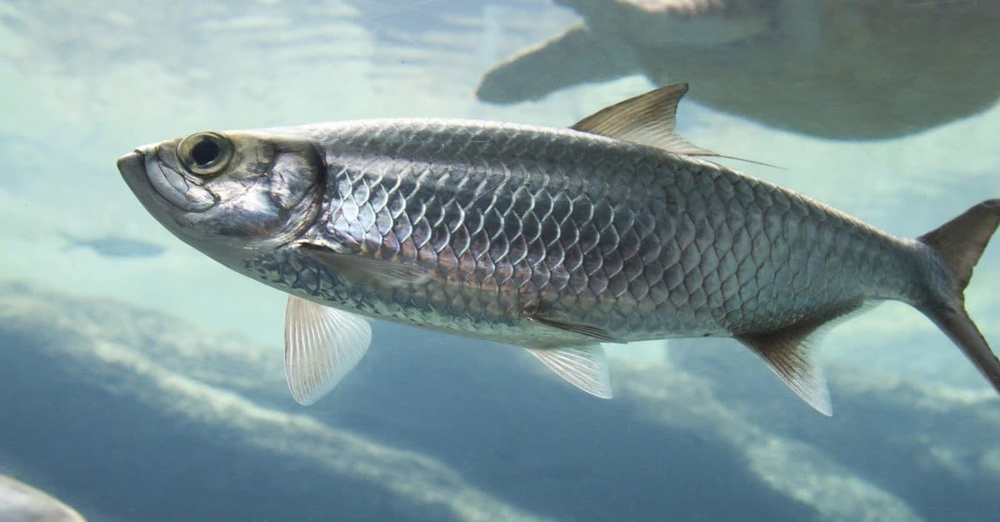
Herring
Herring are small, schooling fish belonging to the family Clupeidae, found in temperate and subarctic waters of the Atlantic and Pacific Oceans. They are known for their silvery bodies and importance in marine food webs, serving as a crucial food source for larger fish, seabirds, and marine mammals. Herring feed on plankton and small crustaceans, often migrating long distances. They are harvested for their rich, oily meat, used in various dishes, including pickled herring and kippers. Herring are also processed for fish oil and bait. Sustainable management and careful monitoring are essential to prevent overfishing and ensure the stability of herring populations.
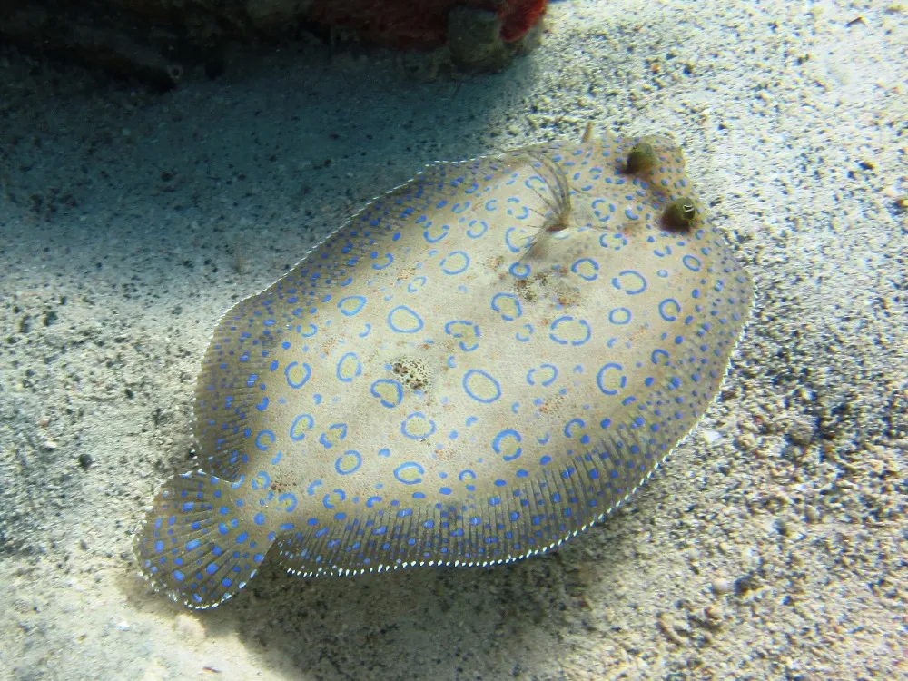
Flounder
Flounder are a group of flatfish species from the families Paralichthyidae, Pleuronectidae, Achiropsettidae, and Bothidae. Found in coastal and estuarine waters worldwide, they are known for their unique body shape, with both eyes on one side of their body after undergoing metamorphosis. This adaptation allows them to lie flat on the ocean floor, camouflaged from predators. Flounder are bottom-dwellers, feeding on small fish, crustaceans, and other invertebrates. Their delicate, mild-flavored meat makes them a popular choice in culinary dishes. Overfishing and habitat degradation pose threats to flounder populations, necessitating sustainable fishing practices and habitat conservation efforts to maintain their numbers.
Coral Reef Fish
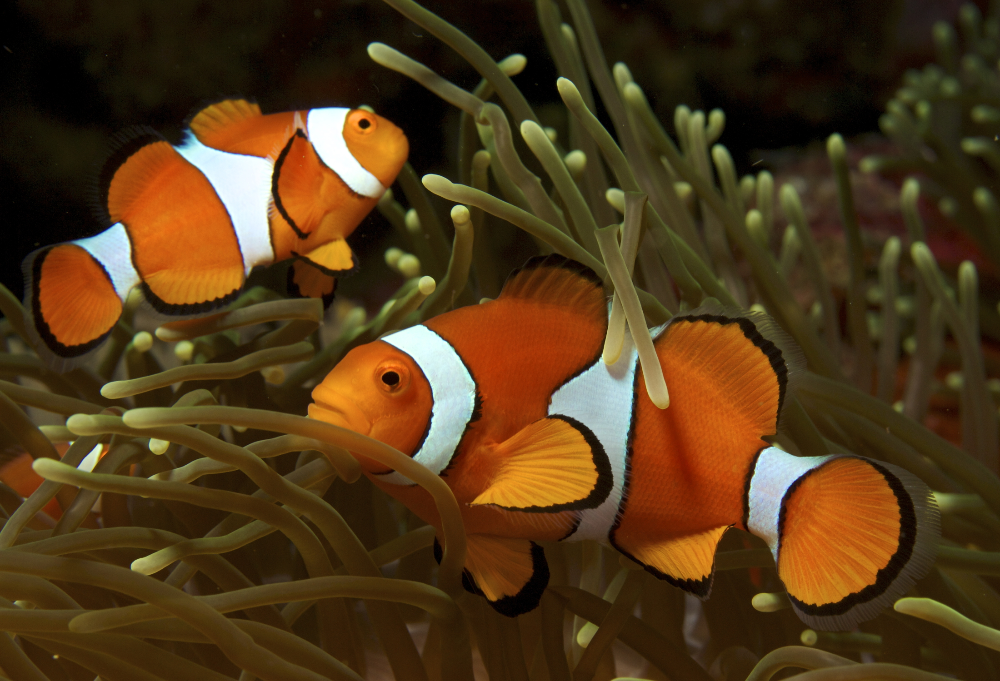
Clownfish
Clownfish, also known as anemonefish, are small, brightly colored fish belonging to the family Pomacentridae. Found in the warm waters of the Indian and Pacific Oceans, they are notable for their striking orange, white, and black coloration and their symbiotic relationship with sea anemones. Clownfish live among the tentacles of anemones, gaining protection from predators due to their immunity to the anemone's stinging cells. They feed on algae and small invertebrates. Popularized by the movie "Finding Nemo," clownfish are popular aquarium pets but are also crucial to coral reef ecosystems. Conservation efforts focus on preserving their habitats and ensuring sustainable collection practices.

Butterfly fish
Butterflyfish are a diverse group of small to medium-sized marine fish belonging to the family Chaetodontidae, found in tropical and subtropical waters around coral reefs worldwide. Known for their vibrant colors and distinctive patterns, butterflyfish exhibit a flattened, disc-shaped body that aids in maneuvering through intricate reef structures. They primarily feed on coral polyps, small invertebrates, and algae. Many species form monogamous pairs and defend territories on the reef. Butterflyfish play a crucial role in reef ecosystems by contributing to coral health through their feeding habits. However, they are vulnerable to habitat loss and coral bleaching, emphasizing the need for conservation efforts to protect their habitats.
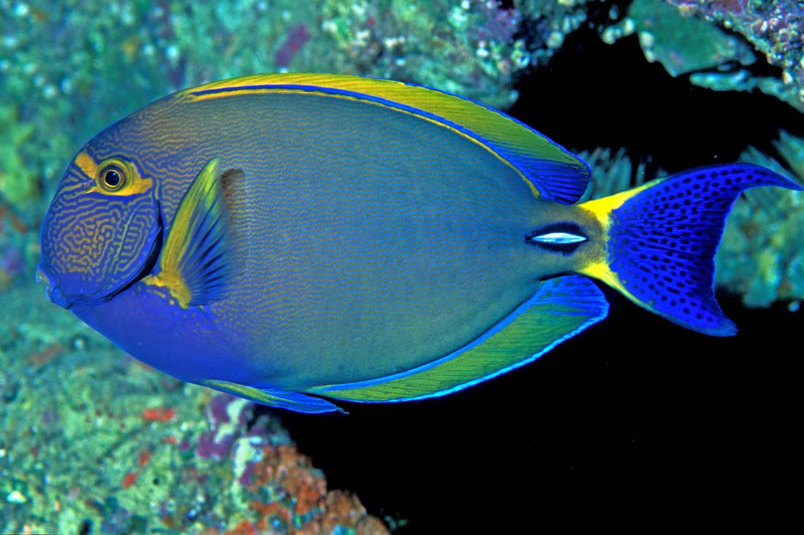
Surgeon fish
Surgeonfish, also known as tangs or doctorfish, are brightly colored marine fish from the family Acanthuridae, found in tropical waters around coral reefs. They are characterized by their laterally compressed bodies, bold coloration, and distinctive scalpel-like spines on either side of their tail base, which are used defensively. Surgeonfish feed primarily on algae, performing a critical role in reef ecosystems by controlling algal growth and promoting coral health. Many species exhibit territorial behavior and form schools. Due to their popularity in the aquarium trade and vulnerability to overfishing, sustainable management practices and marine protected areas are essential for their conservation.
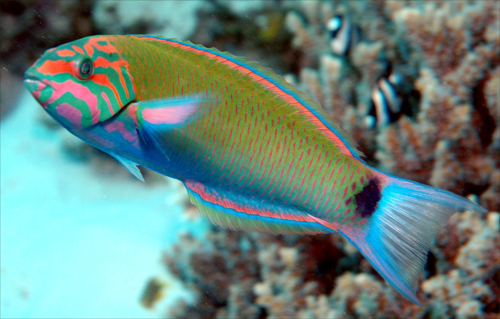
Warsse
Wrasse are a diverse family of marine fish, the Labridae, found in tropical and temperate waters worldwide. They exhibit a wide range of sizes, shapes, and colors, often with elongated bodies and prominent lips. Wrasse are highly adaptable and inhabit various habitats, including reefs, rocky shores, and seagrass beds. They are carnivorous, feeding on small fish, crustaceans, and invertebrates. Many wrasse species play important ecological roles, such as cleaning parasites from larger fish or controlling sea urchin populations on reefs. Some wrasses undergo remarkable sex changes, where females can transform into males to maintain social structures within their groups.
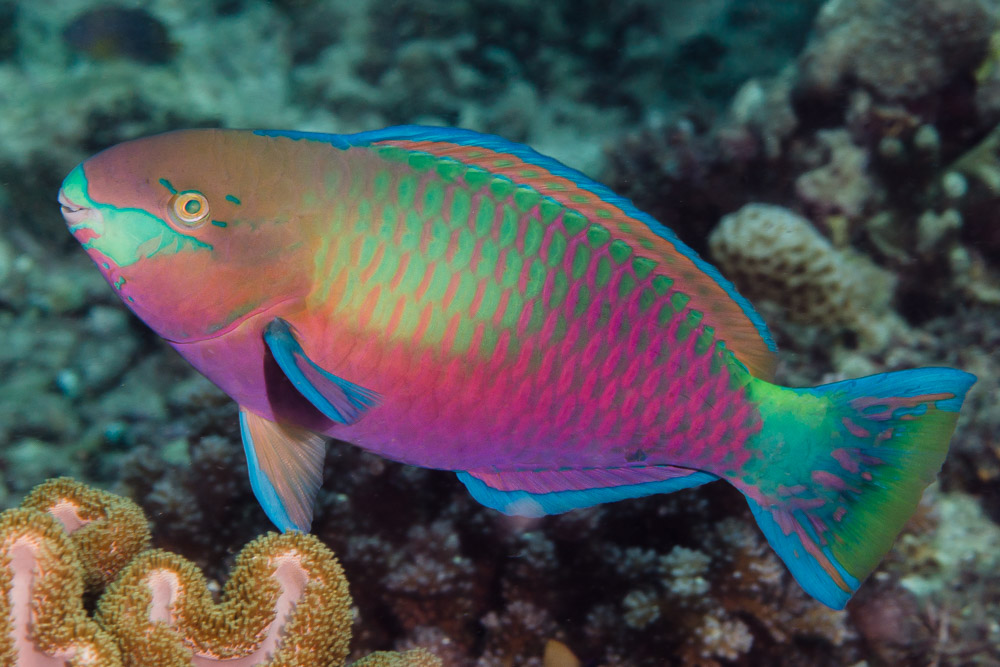
parrotfish
Parrotfish are colorful, reef-dwelling marine fish belonging to the family Scaridae, found in tropical and subtropical waters worldwide. They are named for their parrot-like beaks, which they use to scrape algae and small organisms off coral reefs and rocks. Parrotfish play a crucial role in reef ecosystems by controlling algae growth and contributing to the process of bioerosion, which helps to create and maintain coral reef habitats. They are known for their vibrant colors and patterns, which vary by species and age. Some parrotfish are sequential hermaphrodites, changing sex from female to male as they mature. Conservation efforts focus on protecting their habitats from degradation and overfishing.
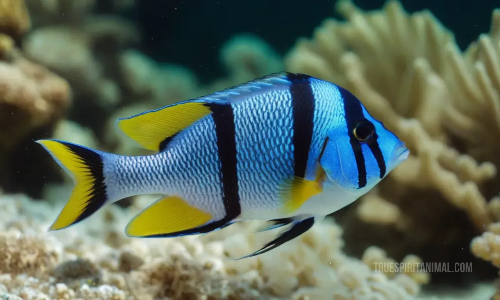
Damselfish
Damselfish are small, colorful marine fish belonging to the family Pomacentridae, found in tropical and temperate waters worldwide. They are known for their vibrant colors, often ranging from bright blues and greens to yellows and oranges. Damselfish inhabit coral reefs and rocky areas, where they form territories and aggressively defend them against intruders. They feed primarily on algae, small invertebrates, and plankton. Some species exhibit interesting behaviors, such as farming algae in their territories or engaging in cleaning symbiosis with larger fish. Damselfish are popular in the aquarium trade but also play essential roles in reef ecology, contributing to ecosystem balance and resilience.
Deep-Sea fish

Angelfish
Angelfish are graceful, disc-shaped marine fish from the family Pomacanthidae, found primarily in tropical and subtropical waters around coral reefs. Known for their striking colors and patterns, angelfish exhibit a flattened, oval-shaped body with elongated fins. They are omnivorous, feeding on algae, small invertebrates, and occasionally coral polyps. Angelfish often form monogamous pairs and defend territories on the reef. They play a vital role in reef ecosystems by controlling algae growth and contributing to coral health. Angelfish are popular in the aquarium trade due to their beauty, but sustainable collection practices are essential to ensure their populations remain stable in the wild.
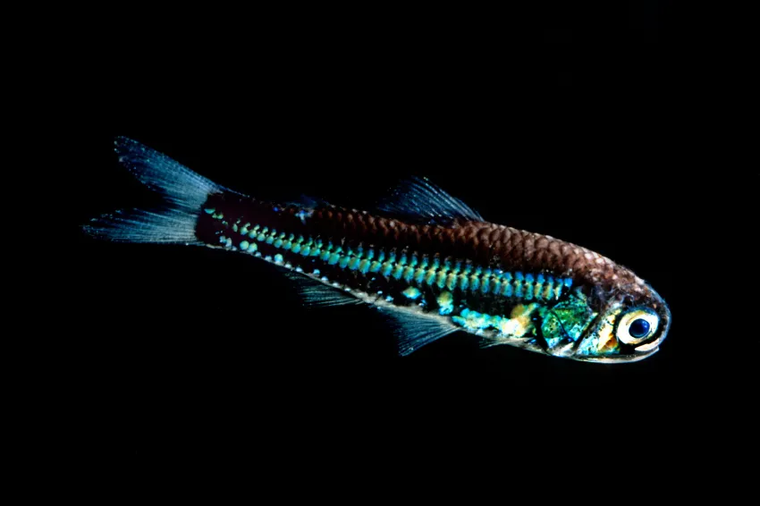
Lanternfish
Lanternfish are small, deep-sea fish belonging to the family Myctophidae, found in oceans worldwide. They are named for their bioluminescent organs, which they use for communication, camouflage, and attracting prey. Lanternfish inhabit mesopelagic and bathypelagic zones, where they migrate vertically to feed on zooplankton and small fish during nighttime. They have streamlined bodies and large eyes adapted for low-light conditions. Lanternfish are a crucial link in marine food webs, serving as prey for larger fish, squid, and marine mammals. Their abundance and widespread distribution make them one of the most populous fish families in the ocean, despite their small size.

Gulper Eel
The gulper eel, also known as the pelican eel or umbrella-mouth gulper, is a deep-sea fish found in oceans worldwide, typically at depths of 500 to 6,000 feet. It is named for its distinctive large mouth, which it can expand to swallow prey much larger than itself. Gulper eels have elongated, snake-like bodies with long tails and lack pelvic fins. They are bioluminescent, using light-producing organs to attract prey in the darkness of the deep sea. Little is known about their behavior and reproduction due to their deep-sea habitat. They are part of the diverse ecosystem of the abyssal zone.
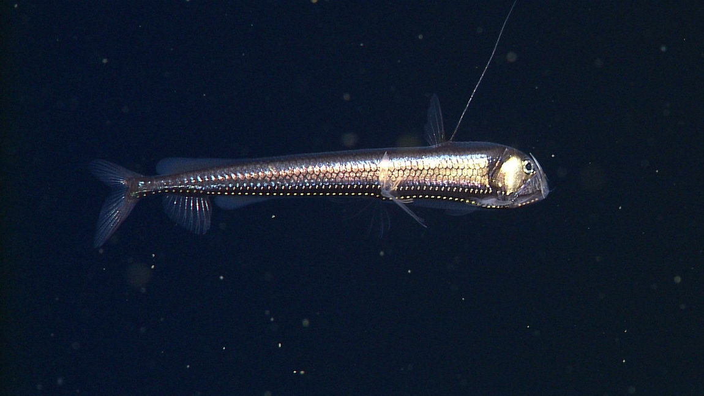
Viperfish
The viperfish is a deep-sea predator found in oceans worldwide, typically residing at depths of 1,000 to 4,000 feet. It is known for its menacing appearance, characterized by long, fang-like teeth that can impale prey caught in its trap-like mouth. Viperfish have elongated bodies, dark coloration, and bioluminescent organs along their belly, used to attract prey in the darkness. They are skilled hunters, feeding on fish and crustaceans. Viperfish are adapted to withstand the extreme pressures of the deep sea and possess large eyes to detect faint bioluminescent signals. Their unique adaptations make them fascinating subjects for deep-sea research.
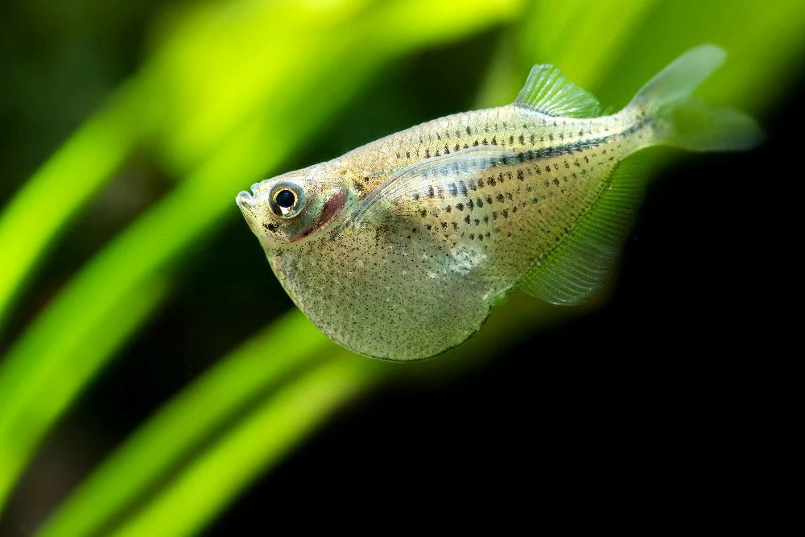
Hatchetfish
Hatchetfish are small, deep-sea fish found in oceans worldwide, inhabiting depths ranging from 200 to 1,500 meters. They are named for their distinctive hatchet-shaped body, which is flattened laterally and highly compressed. Hatchetfish have silver, transparent bodies with large, upward-facing eyes adapted for spotting prey and detecting bioluminescent signals. They possess light-producing organs called photophores along their belly, which help camouflage them from predators below and attract prey above. Hatchetfish feed on small crustaceans and fish. Their ability to adjust their body position allows them to remain nearly invisible against the dimly lit background of the deep ocean, making them well-adapted to their environment.
Unique and Unusual Fish
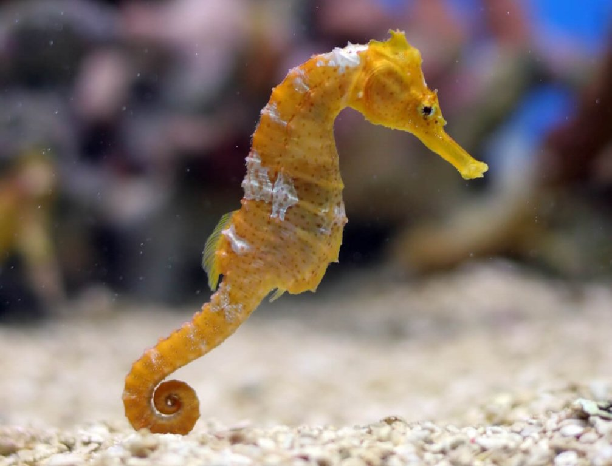
Seahorse
Seahorses are unique marine fish belonging to the family Syngnathidae, found in shallow coastal waters worldwide. They are known for their upright posture, horse-like head, and prehensile tail, which they use to anchor themselves to seagrass and coral. Seahorses exhibit remarkable monogamy, often forming lifelong bonds and engaging in elaborate courtship rituals. The male seahorse carries fertilized eggs in a brood pouch on its abdomen until they hatch, a rare trait among fish. Seahorses feed on small crustaceans and plankton. Threats such as habitat loss and overexploitation for traditional medicine and aquarium trade highlight the need for conservation efforts to protect these charismatic species.
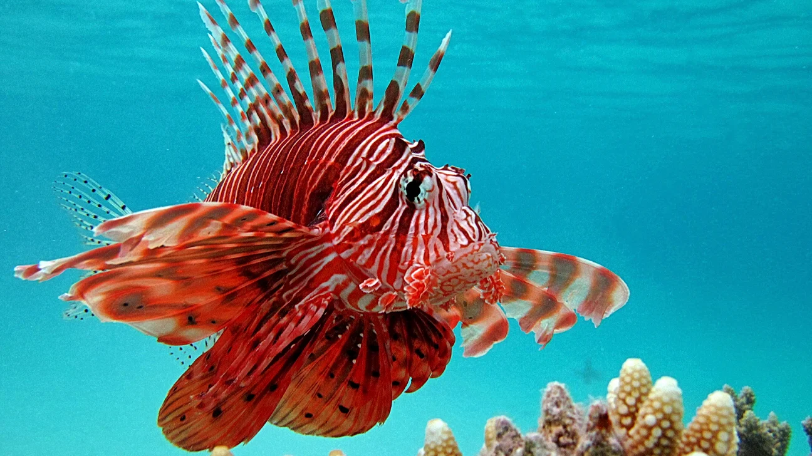
Lionfish
Lionfish, also known as zebrafish or turkeyfish, are venomous marine fish native to the Indo-Pacific region but now invasive in the Atlantic Ocean and Caribbean Sea. They are known for their striking appearance, with red, white, and black stripes and elongated fins resembling a mane. Lionfish inhabit coral reefs and rocky areas, where they prey on small fish and crustaceans. Their venomous spines serve as defense against predators. Lionfish reproduce rapidly and have no natural predators in their invasive range, posing a significant threat to native marine ecosystems by outcompeting local species and disrupting food webs. Efforts are ongoing to control their populations.
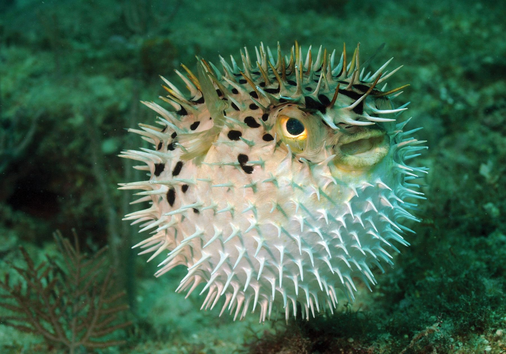
Pufferfish
Pufferfish, also known as blowfish or balloonfish, are fascinating marine fish belonging to the family Tetraodontidae. They are found in tropical and subtropical waters worldwide. Pufferfish are named for their ability to inflate their bodies into a ball-like shape to deter predators. They have a distinctive appearance, with beak-like teeth and spiky skin. Pufferfish are highly toxic due to tetrodotoxin, a potent neurotoxin found in their internal organs and skin. Despite their toxicity, they are considered a delicacy in some cuisines, such as Japanese fugu. Handling and preparation require specialized knowledge to ensure safety, highlighting their dual reputation as both dangerous and prized fish.

Electric Eel
Electric eels are remarkable freshwater fish native to South America, belonging to the family Electrophoridae. Despite their name, they are actually a type of knifefish rather than a true eel. Electric eels are known for their ability to generate powerful electric shocks, which they use for hunting prey, self-defense, and communication. They can discharge up to 600 volts of electricity, enough to stun or deter predators and incapacitate prey. Electric eels have long, snake-like bodies and inhabit slow-moving rivers and floodplains. Their unique adaptation to produce electricity makes them a subject of scientific study and fascination in the field of bioelectricity.

Flying Fish
Flying fish are extraordinary marine fish known for their unique ability to glide above the water's surface using their enlarged pectoral fins. Found in tropical and subtropical oceans worldwide, flying fish have streamlined bodies and deeply forked tails, enabling them to reach speeds of up to 35 miles per hour (56 km/h) when launching out of the water. They glide to evade predators and cover distances while airborne, sometimes spanning hundreds of feet. Flying fish feed on plankton and small fish. Their remarkable aerial abilities have fascinated scientists and inspired the curiosity of observers for centuries, showcasing nature's ingenuity in adaptation.
Sharks
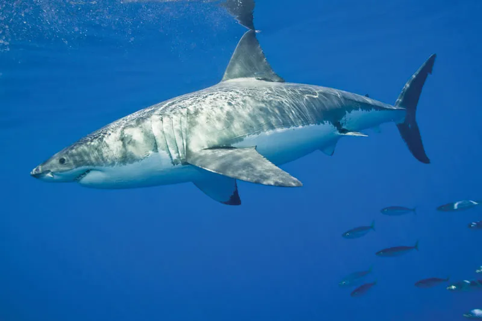
Great White Shark
The great white shark (Carcharodon carcharias) is a majestic ocean predator, reaching lengths of up to 20 feet (6 meters) and weighing up to 5,000 pounds (2,300 kg). Its powerful tail and streamlined body enable speeds of 35 miles per hour (56 km/h). Feeding on fish, seals and sea lions, great whites are apex predators. Their distinctive white underbelly and gray dorsal side provide camouflage. Despite their fearsome reputation, great whites play a vital role in maintaining marine ecosystem balance. They are found in coastal and offshore waters in all major oceans, and are considered vulnerable due to habitat loss and overfishing.

Hammerhead Shark
The hammerhead shark (Sphyrna spp.) is a unique and fascinating ocean predator. Characterized by its distinctive lateral extension of the head, resembling a hammer, this shark navigates and hunts with exceptional maneuverability. Reaching lengths of up to 20 feet (6 meters), hammerheads inhabit warm, temperate and tropical waters worldwide. They feed on fish, squid and crustaceans. Social creatures, hammerheads often form large schools. Listed as endangered due to habitat loss, overfishing and finning, conservation efforts are underway to protect these iconic sharks. Their striking appearance and impressive agility make hammerheads a beloved and respected marine species.

Tiger Shark
The tiger shark (Galeocerdo cuvier) is a powerful, apex predator found in tropical and subtropical waters worldwide. Recognizable by its striped pattern, which fades with maturity, this shark reaches lengths of up to 16 feet (4.9 meters) and weighs up to 1,900 pounds (862 kg). Tiger sharks are opportunistic feeders, consuming fish, seals, birds, turtles and other sharks. They are known for their scavenging behavior and ability to digest a wide variety of prey. Considered near threatened due to overfishing and finning, tiger sharks play a crucial role in maintaining marine ecosystem balance and are revered for their majesty and resilience.

Bull Shark
The bull shark (Carcharhinus leucas) is a robust and aggressive predator found in warm, shallow waters worldwide, including rivers and estuaries. Reaching lengths of up to 11.5 feet (3.5 meters) and weighing 500 pounds (227 kg), bull sharks are recognized by their stout bodies and broad, flat snouts. They feed on fish, birds, mammals and other sharks. Known for their ability to thrive in fresh and brackish water, bull sharks are considered near threatened due to habitat loss, overfishing and finning. Their formidable reputation and adaptability make them a fascinating, yet formidable, marine species. They are responsible for a number of attacks on humans.

Whale Shark
The whale shark (Rhincodon typus) is the largest fish on Earth, reaching lengths of up to 40 feet (12 meters) and weighing 20 tons. Despite its massive size, this gentle giant feeds on plankton, fish eggs and small fish. Found in warm, tropical waters, whale sharks are migratory creatures, traveling long distances to mate and feed. Their distinctive white spots and stripes make them easily recognizable. Considered vulnerable due to overfishing and habitat loss, conservation efforts protect these majestic creatures. Whale sharks are revered for their docile nature, allowing divers and snorkelers to swim alongside them, experiencing an unforgettable encounter with the ocean's largest inhabitant.

Mako Shark
The mako shark (Isurus spp.) is the fastest-swimming shark, reaching speeds of up to 46 mph (74 km/h). This highly migratory predator inhabits tropical and temperate waters worldwide. Reaching lengths of 10 feet (3 meters) and weighing 200 pounds (91 kg), makos are known for their striking blue-gray color and conical snout. Feeding on tuna, mackerel and squid, they're apex predators. Mako sharks are vulnerable due to overfishing, primarily for their fins and meat. Conservation efforts aim to protect this magnificent species, admired for its agility, power and impressive leaps from the ocean's surface. Two main species exist: shortfin and longfin makos.
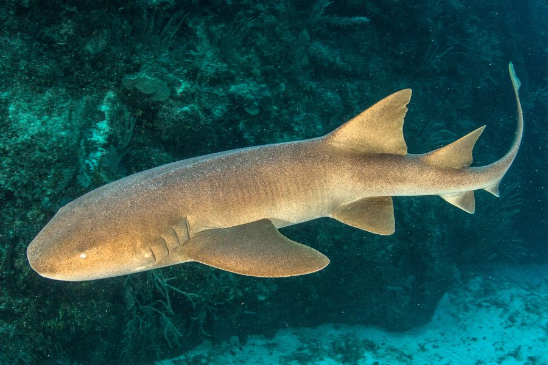
Nurse Shark
The nurse shark (Ginglymostoma cirratum) is a nocturnal, bottom-dwelling predator found in tropical and subtropical waters. Reaching lengths of 14 feet (4.3 meters) and weighing 250 pounds (113 kg), nurse sharks have distinctive nasal barbels and a broad, flat head. They feed on fish, crustaceans and mollusks. Typically harmless to humans, nurse sharks are often encountered by divers and snorkelers. Listed as vulnerable due to habitat loss, overfishing and finning, conservation efforts protect this species. Nurse sharks are recognized for their unique appearance and calm demeanor, playing a vital role in maintaining marine ecosystem balance. They are common in coral reefs.

Thresher Shark
The thresher shark (Alopias spp.) is a pelagic predator characterized by its distinctive caudal fin, used for hunting and defense. Reaching lengths of 15-18 feet (4.5-5.5 meters), threshers inhabit tropical and temperate waters. They feed on fish, squid and crustaceans. Three species exist: common thresher, bigeye thresher and pelagic thresher. Threshers are apex predators, employing ambush tactics. Vulnerable due to overfishing, finning and bycatch, conservation efforts aim to protect this majestic species. Threshers are prized for their meat, fins and liver oil. Their impressive tail and nocturnal hunting habits make them a fascinating marine species. Scientific research continues to unravel their ecological importance.

Lemon Shark
The lemon shark (Negaprion brevirostris) is a tropical, coastal predator found in Atlantic, Pacific and Indian Ocean waters. Reaching lengths of 10-12 feet (3-3.6 meters) and weighing 200-400 pounds (91-182 kg), lemon sharks have distinctive yellow-brown coloration and broad, flat heads. They feed on fish, crustaceans and mollusks. Social creatures, lemon sharks often form aggregations. Listed as vulnerable due to habitat loss, overfishing and finning, conservation efforts protect this species. Lemon sharks are revered for their unique appearance, nocturnal habits and ecological importance in maintaining marine balance. Research on lemon sharks provides insights into shark behavior, migration and reproduction.

Basking Shark
The basking shark (Cetorhinus maximus) is the second-largest fish, reaching lengths of 35-40 feet (10.6-12.2 meters) and weighing 5-7 tons. Found in temperate and sub-Arctic waters, this filter feeder inhabits coastal and offshore regions. Basking sharks feed on plankton, small fish and algae. Their distinctive conical snout and gill rakers facilitate feeding. Despite their massive size, they swim slowly, typically 3-6 km/h (1.9-3.7 mph). Listed as vulnerable due to overfishing, finning and bycatch, conservation efforts protect this gentle giant. Basking sharks are revered for their majestic appearance and ecological role in maintaining marine balance, making them a beloved and iconic marine species.

Blue Shark
The blue shark (Prionace glauca) is an open-ocean predator found in temperate and tropical waters worldwide. Reaching lengths of 12-15 feet (3.6-4.5 meters) and weighing 400-600 pounds (182-272 kg), blue sharks are recognized by their vibrant blue-gray color and pointed snout. They feed on fish, squid and crustaceans. Known for their impressive migrations and ability to dive deep, blue sharks are apex predators. Listed as near threatened due to overfishing and finning, conservation efforts aim to protect this species. Blue sharks are prized for their meat and fins, and are often encountered by divers and fishermen, showcasing their striking appearance.

Blacktip Shark
The blacktip shark (Carcharhinus limbatus) is a medium-sized, coastal predator found in tropical and subtropical waters worldwide. Reaching lengths of 5-6 feet (1.5-1.8 meters) and weighing 44-190 pounds (20-86 kg), blacktip sharks are recognized by their distinctive black tips on fins. They feed on fish, squid and crustaceans. Known for their agility and speed, blacktip sharks are common in shallow, coastal waters. Listed as near threatened due to overfishing and habitat loss, conservation efforts protect this species. Blacktip sharks are frequently encountered by surfers, divers and fishermen, showcasing their sleek appearance and energetic behavior, often breaching water's surface.

Sand Tiger Shark
The sand tiger shark (Carcharias taurus) is a distinctive, coastal predator found in tropical and temperate waters worldwide. Reaching lengths of 10-13 feet (3-4 meters) and weighing 350-450 pounds (159-204 kg), sand tigers are recognized by their stout bodies, long snouts and protruding jaws. They feed on fish, seals and other marine mammals. Known for their fearsome appearance and powerful swimming, sand tigers are apex predators. Listed as vulnerable due to overfishing, finning and habitat loss, conservation efforts protect this species. Sand tigers are prized for their unique appearance, making them a sought-after sight for divers and aquarium enthusiasts.

Greenland Shark
The Greenland shark (Somniosus microcephalus) is a slow-moving, deep-water predator inhabiting Arctic and sub-Arctic waters. Reaching lengths of 24 feet (7 meters) and weighing 3,000 pounds (1,361 kg), it's one of the largest predatory fish. Its distinctive brown-gray coloration and small eyes distinguish it. Feeding on fish, seals and carrion, Greenland sharks have toxic flesh due to high trimethylamine oxide levels, making them inedible. Estimated to live up to 400 years, they're considered one of the longest-living vertebrates. Conservation status is vulnerable due to overfishing and climate change impacts on habitat and prey distribution. Research continues to unravel mysteries surrounding this enigmatic species.
Mammals

Blue Whales
The blue whale is the largest animal known to have ever existed, a majestic marine mammal belonging to the baleen whale suborder Mysticeti. Found in oceans worldwide, blue whales can reach lengths of up to 100 feet (30 meters) and weigh over 200 tons. They are characterized by their long, streamlined bodies, mottled blue-gray coloration, and distinctive throat grooves that expand when feeding. Blue whales feed primarily on krill, filtering enormous volumes of water through their baleen plates. Despite their size, they are graceful swimmers, capable of traveling long distances during seasonal migrations. Conservation efforts aim to protect their populations from threats such as ship strikes and ocean pollution.

Humpback Whale
Humpback whales are iconic marine mammals found in oceans worldwide, known for their acrobatic behaviors such as breaching and tail-slapping. They belong to the baleen whale suborder Mysticeti and can grow up to 60 feet (18 meters) in length. Humpbacks are distinguished by their long pectoral fins, knobby head with tubercles, and distinctively patterned tail flukes. They undertake long migrations between feeding grounds in polar waters and breeding/calving grounds in tropical waters. Humpback whales are known for their complex songs, believed to play a role in communication and mating rituals. Conservation efforts focus on protecting their habitats and reducing threats such as entanglement in fishing gear and ocean noise pollution.

Sperm Whale
Sperm whales are large, deep-diving marine mammals belonging to the toothed whale family Physeteridae. They are known for their massive heads, which can make up a third of their body length, and their distinctive block-shaped heads with a single blowhole located asymmetrically to the left. Sperm whales are found in deep ocean waters worldwide, where they dive to great depths in search of squid and deep-sea fish. They are famous for producing a waxy substance called spermaceti in their heads, historically valuable in candle-making. Sperm whales have complex social structures and are known for their vocalizations, called clicks, used for echolocation and communication. Conservation efforts aim to protect their populations from threats such as whaling, pollution, and entanglement in fishing gear.
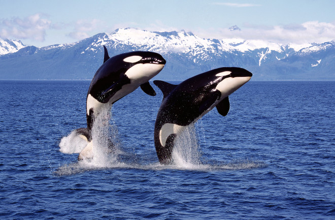
Orca
Orcas, also known as killer whales, are highly intelligent and social marine mammals belonging to the dolphin family Delphinidae. They are apex predators found in all oceans, from polar to tropical regions. Orcas are known for their distinctive black and white coloration, robust bodies, and tall dorsal fins. They live in matrilineal pods led by females and exhibit complex social behaviors and communication through vocalizations. Orcas are opportunistic feeders, preying on fish, squid, marine mammals, and even other whales. They are revered in indigenous cultures and are popular subjects for research and conservation efforts to protect their populations and habitats worldwide.

Bottlenose Dolphin
Bottlenose dolphins are one of the most well-known and widely studied cetacean species, found in temperate and tropical waters worldwide. They are characterized by their elongated snout, robust body, and curved dorsal fin. Bottlenose dolphins are highly social animals, living in pods that can range from a few individuals to over a hundred. They exhibit playful behaviors, such as riding waves and leaping out of the water. They are opportunistic feeders, consuming fish, squid, and crustaceans. Bottlenose dolphins are known for their intelligence, problem-solving abilities, and complex communication through whistles, clicks, and body language. Conservation efforts focus on protecting their habitats and reducing human-induced threats.

Spinner Dolphin
Spinner dolphins are small cetaceans found in tropical and subtropical waters worldwide. They are named for their acrobatic spinning leaps out of the water, which they perform during social interactions and while feeding. Spinner dolphins have a slender body, long, thin beak, and distinctive tripartite color pattern with a dark gray back, light gray sides, and white belly. They live in large, fluid groups called pods that can number in the hundreds or even thousands. Spinner dolphins feed primarily on small fish and squid, using echolocation to locate prey. Conservation efforts focus on protecting their habitats and minimizing disturbance from human activities.

Harbor Porpoise
Harbor porpoises are small cetaceans found in coastal waters of the Northern Hemisphere, known for their shy and elusive nature. They have a robust body with a blunt snout and a dark gray to black coloration, often with lighter patches on their sides and belly. Harbor porpoises are skilled swimmers, capable of speeds up to 20 miles per hour (32 km/h). They feed on small fish and squid, using echolocation to locate prey. Harbor porpoises live in small groups or alone and are vulnerable to entanglement in fishing gear and habitat degradation. Conservation efforts aim to protect their populations and habitats from human impacts.

Gray Seal
Gray seals are large, robust pinnipeds found in the North Atlantic Ocean and adjacent seas. They have a distinctive, elongated body with a long, Roman nose and a mottled gray to brown coloration, which darkens with age. Gray seals are skilled divers, capable of diving to depths exceeding 300 feet (90 meters) in search of fish, squid, and crustaceans. They are highly social animals, forming colonies during breeding seasons on rocky shorelines and islands. Conservation efforts have helped gray seal populations recover from historic hunting pressures, although they still face threats such as entanglement in fishing gear and habitat disturbance.

Weddell Seal
Weddell seals are large, robust pinnipeds native to Antarctica, primarily found along the continent's coast and nearby islands. They are known for their distinctive mottled gray fur with darker patches and a robust body adapted to life in icy waters. Weddell seals are exceptional divers, capable of reaching depths of over 2,000 feet (600 meters) and remaining underwater for up to 80 minutes. They feed primarily on fish, squid, and krill, using their powerful jaws and teeth to capture prey. Weddell seals are known for their vocalizations underwater and form breeding colonies on stable ice shelves during the Antarctic summer.
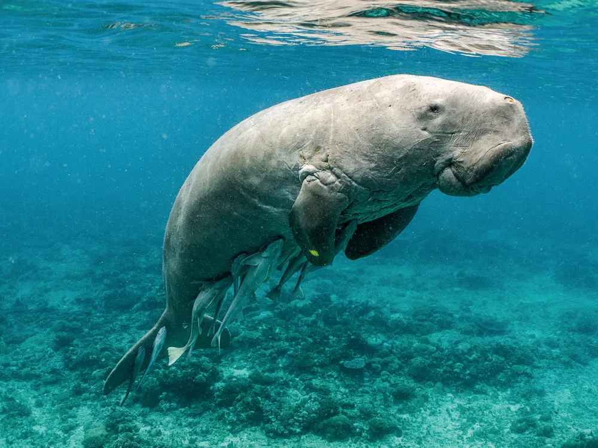
Dugong
Dugongs are large marine mammals closely related to manatees, belonging to the family Dugongidae. Found in shallow coastal waters of the Indo-Pacific region, from East Africa to Australia, they are herbivorous grazers, feeding on seagrasses and aquatic plants. Dugongs have a fusiform body with a tail fluke similar to whales, adapted for efficient swimming. They are known for their gentle nature and solitary or small group behaviors. Dugongs face threats from habitat degradation, entanglement in fishing gear, and collisions with boats. Conservation efforts focus on protecting their seagrass habitats and establishing marine protected areas to ensure the survival of these endangered marine mammals.
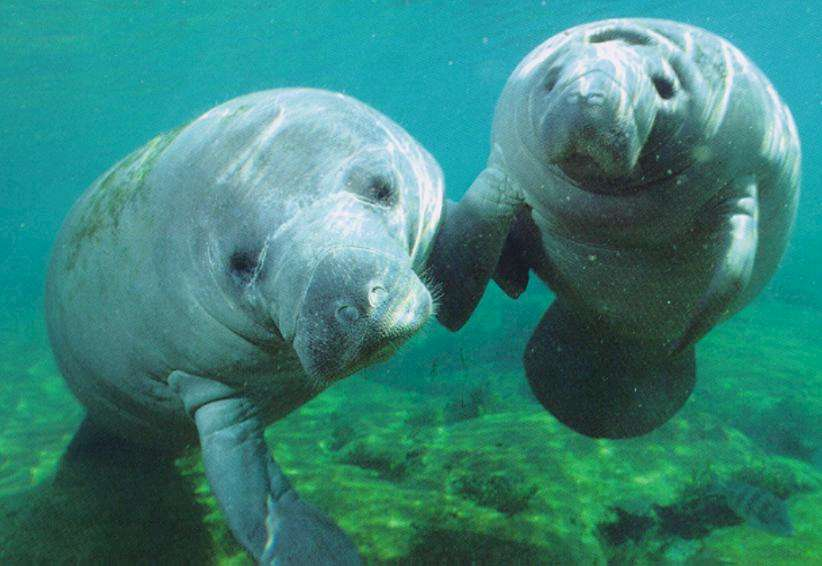
Manatees
Manatees, also known as sea cows, are large, gentle marine mammals belonging to the family Trichechidae. Found in coastal and freshwater habitats in the Atlantic Ocean, the Caribbean Sea, and the Amazon Basin, they are known for their slow, peaceful nature. Manatees have a robust, cylindrical body with a paddle-shaped tail and flippers adapted for maneuvering through water. They primarily graze on seagrasses and aquatic plants, playing a crucial role in maintaining healthy aquatic ecosystems. Manatees face threats from habitat loss, boat collisions, and entanglement in fishing gear. Conservation efforts focus on protecting their habitats and reducing human-induced threats to ensure their survival.
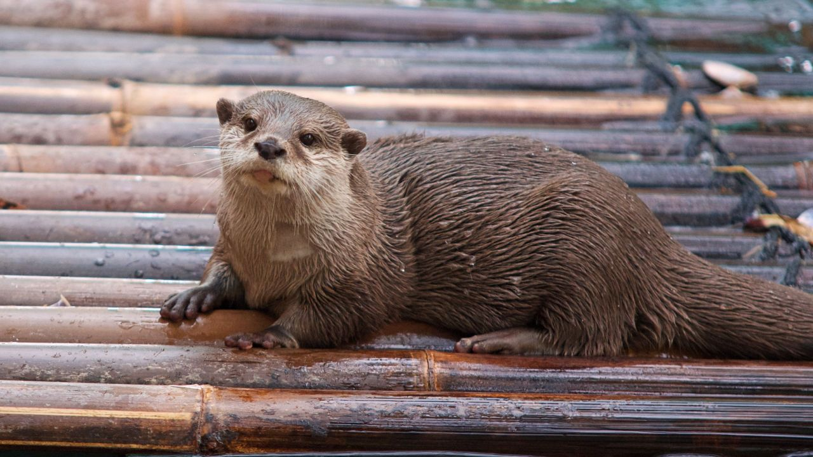
Otter
Otters are semi-aquatic mammals belonging to the family Mustelidae, known for their playful behavior and streamlined bodies adapted for swimming. They inhabit freshwater rivers, lakes, and coastal marine environments worldwide, from North America to Asia. Otters have dense fur that repels water, allowing them to stay warm in cold waters. They are skilled hunters, feeding on fish, crustaceans, and small mammals. Otters are highly social and often live in family groups or small communities. They use tools like rocks to crack open shellfish. Despite conservation efforts, otters face threats from habitat loss, pollution, and human disturbance, necessitating ongoing protection measures.
Reptiles

Green Turtle
The green turtle (Chelonia mydas) is a large, herbivorous sea turtle found in tropical and subtropical oceans worldwide. Named for the greenish color of their fat, these turtles primarily feed on seagrasses and algae. They have a smooth, heart-shaped shell and can grow up to 1.5 meters in length. Green turtles are vital to marine ecosystems, maintaining healthy seagrass beds and coral reefs. However, they are endangered due to threats like habitat loss, climate change, poaching, and entanglement in fishing gear. Conservation efforts focus on protecting nesting sites, reducing bycatch, and mitigating climate change impacts.

Loggerhead Turtle
The loggerhead turtle (Caretta caretta) is a large sea turtle found in temperate and tropical oceans worldwide. Known for their strong, large heads and powerful jaws, loggerheads primarily feed on hard-shelled prey like crustaceans and mollusks. They have a reddish-brown, heart-shaped shell and can grow up to 1 meter in length. Loggerheads are crucial for marine ecosystems, helping maintain the balance of marine life. Unfortunately, they are threatened by habitat loss, pollution, climate change, and bycatch in fishing gear. Conservation efforts focus on protecting nesting beaches, reducing bycatch, and mitigating the effects of climate change.

Leatherback Turtles
The leatherback turtle (Dermochelys coriacea) is the largest of all sea turtles and is unique for its lack of a hard shell. Instead, its carapace is covered with a leathery skin, giving it its name. Leatherbacks can grow up to 2 meters in length and weigh over 900 kilograms. They are highly migratory, traveling vast distances across the Atlantic, Pacific, and Indian Oceans. Leatherbacks primarily feed on jellyfish, playing a crucial role in controlling jellyfish populations. Unfortunately, they are critically endangered due to threats like habitat loss, bycatch, marine pollution, and climate change. Conservation efforts include protecting nesting sites, reducing bycatch, and minimizing plastic pollution.

Hawksbill
The hawksbill turtle (Eretmochelys imbricata) is a critically endangered sea turtle known for its distinctive, pointed beak and beautiful, overlapping shell plates. Found in tropical coral reefs, hawksbills primarily feed on sponges, contributing to reef health by controlling sponge populations. They are relatively small, growing up to about 1 meter in length. Hawksbill turtles face significant threats from illegal trade of their shells, habitat loss, and climate change. Conservation efforts focus on protecting nesting sites, enforcing bans on the trade of turtle products, and preserving coral reef habitats to ensure the survival of this important species.

Kemp's Ridley Turtle
The Kemp's ridley turtle (Lepidochelys kempii) is the smallest and most endangered sea turtle species, primarily found in the Gulf of Mexico. Adults typically reach about 60-70 centimeters in length and weigh up to 45 kilograms. Known for their unique mass nesting called "arribada," females come ashore simultaneously to lay eggs. Kemp's ridley turtles primarily feed on crabs and other crustaceans. They face numerous threats, including habitat loss, bycatch in fishing gear, oil spills, and climate change. Conservation efforts focus on protecting nesting sites, reducing bycatch, and rehabilitating injured turtles to boost their populations and ensure their survival.

Marine Iguana
The marine iguana (Amblyrhynchus cristatus) is a unique species of iguana found only on the Galápagos Islands. Known for its ability to forage in the sea, it is the only lizard that can swim and feed on algae in the ocean. Marine iguanas have flattened tails for swimming, strong limbs with sharp claws for clinging to rocks, and specialized glands to expel salt. Their dark coloration helps them absorb heat after cold dives. Marine iguanas are vulnerable to threats such as climate change, habitat destruction, and invasive species. Conservation efforts focus on protecting their natural habitat and mitigating human impact.

Sea Snakes
Sea snakes are a group of highly venomous marine reptiles found primarily in the warm coastal waters of the Indian and Pacific Oceans. Adapted to aquatic life, they have flattened tails for swimming and can remain submerged for extended periods by absorbing oxygen through their skin. Sea snakes primarily feed on fish and eels. While their venom is potent, they are generally not aggressive towards humans. However, they are vulnerable to threats like habitat destruction, pollution, and bycatch in fishing operations. Conservation efforts aim to protect their habitats, reduce bycatch, and raise awareness about the importance of these unique marine reptiles.

Saltwater Crocodile
The saltwater crocodile (Crocodylus porosus) is the largest living reptile, found in brackish and freshwater regions of Southeast Asia, Northern Australia, and the eastern coast of India. They can grow up to 7 meters and weigh over 1,000 kilograms. Known for their powerful jaws and aggressive nature, saltwater crocodiles are apex predators, feeding on a variety of prey, including fish, birds, and mammals. They have a broad snout and rough, scaly skin. Despite being protected, they face threats from habitat loss, illegal hunting, and human-crocodile conflicts. Conservation efforts focus on habitat protection, anti-poaching measures, and public education to ensure their survival.
invertebrate
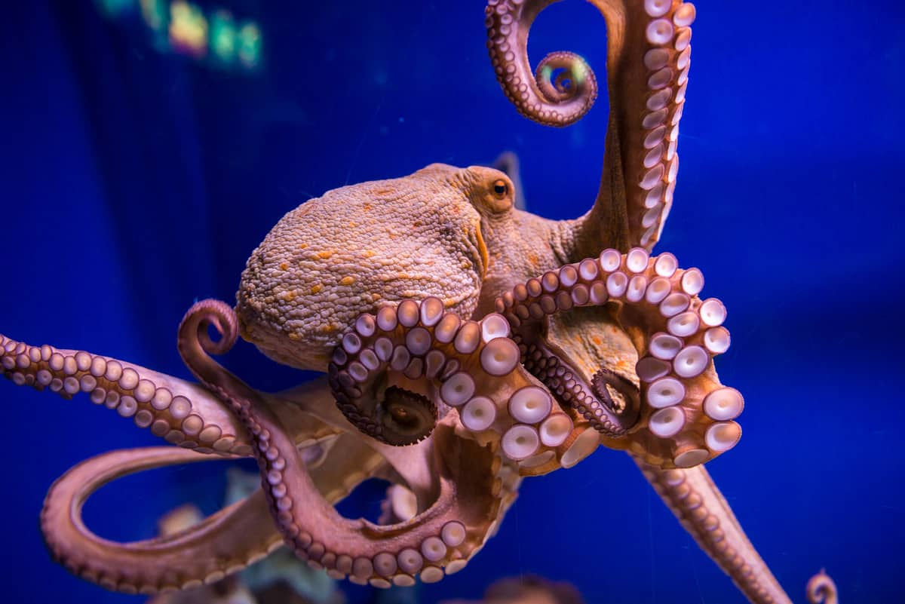
Octopus
The octopus is a highly intelligent, soft-bodied mollusk found in oceans worldwide. Known for their eight arms lined with suction cups, they can manipulate objects and open jars. Octopuses are masters of camouflage, able to change color and texture to blend into their surroundings. They possess a large brain and excellent problem-solving skills. Octopuses have a unique defense mechanism: they can eject ink to confuse predators and make a quick escape. They primarily feed on crabs, shrimp, and small fish. Despite their solitary nature, octopuses play a crucial role in marine ecosystems as both predators and prey.
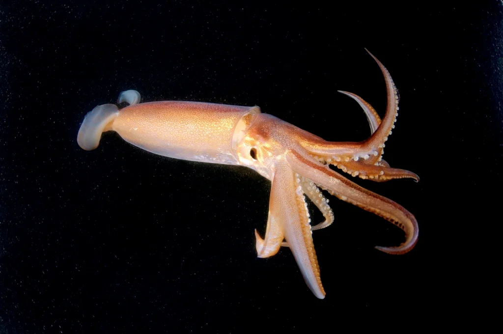
Squid
Squids are fascinating cephalopods found in oceans worldwide, known for their elongated bodies, large eyes, and ten limbs – eight arms and two longer tentacles. Highly adaptable and agile swimmers, they use jet propulsion to move through water. Squids are skilled predators, feeding on fish, crustaceans, and other marine animals. They have remarkable abilities to change color and emit bioluminescence for camouflage, communication, and attracting prey. Squids play a significant role in marine ecosystems, both as predators and as prey for larger animals. Their complex nervous systems and behaviors make them a subject of interest in scientific research.
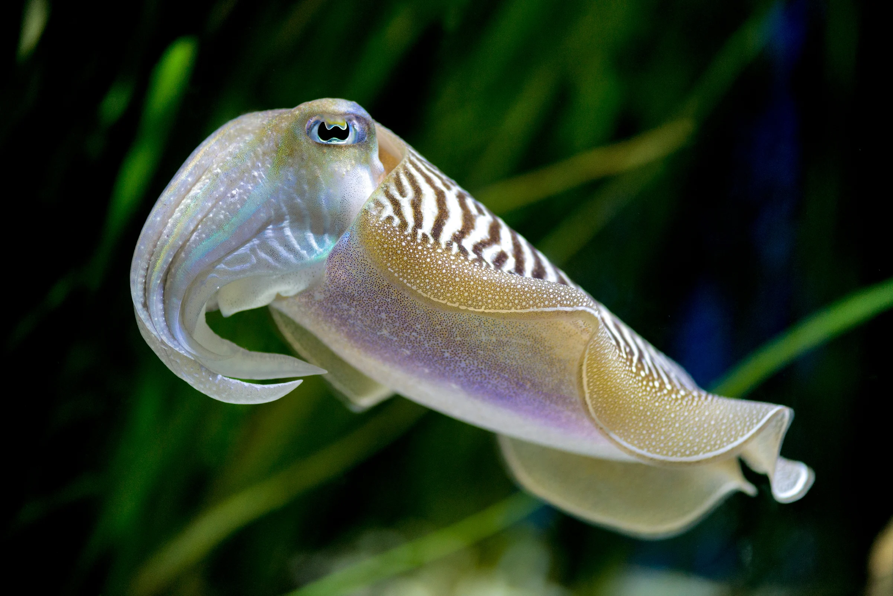
Cuttlefish
Cuttlefish are mollusks closely related to squids and octopuses, inhabiting shallow coastal waters worldwide. They are known for their oval-shaped bodies, flattened fins, and unique internal shell called a cuttlebone, which helps control buoyancy. Cuttlefish have large, W-shaped pupils and can rapidly change color and texture for communication, camouflage, and hunting. They are skilled predators, using their tentacles to capture and eat small fish and crustaceans. Cuttlefish have highly developed brains and complex behaviors, making them a subject of scientific study. They play a crucial role in marine ecosystems as both predators and prey, contributing to biodiversity and ecosystem balance.
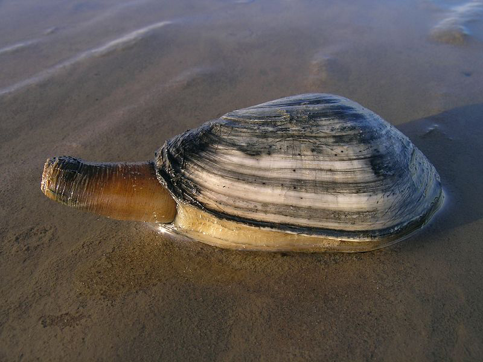
Clam
Clams are bivalve mollusks found in freshwater and marine environments worldwide. They have two hinged shells that can open and close to protect their soft bodies. Clams are filter feeders, using a siphon to draw in water and filter out plankton and organic particles for food. They bury themselves in sand or mud, using their muscular foot to anchor and move. Clams are an important food source for many marine animals and humans. They play a significant role in marine ecosystems by filtering water and recycling nutrients, contributing to water quality and ecosystem health.
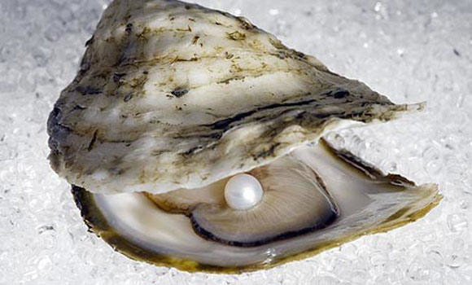
Oyster
Oysters are bivalve mollusks found in marine and brackish waters worldwide. They have two rough, irregularly shaped shells that protect their soft bodies. Oysters are filter feeders, consuming plankton and organic particles by pumping water through their gills. They play a critical ecological role by filtering water, improving water quality, and cycling nutrients. Oyster reefs provide habitat and nursery areas for various marine species, contributing to biodiversity. Oysters are also economically important, cultivated for their meat as a delicacy in seafood cuisine. Despite their ecological and economic significance, oyster populations face threats from habitat loss, pollution, and overharvesting.
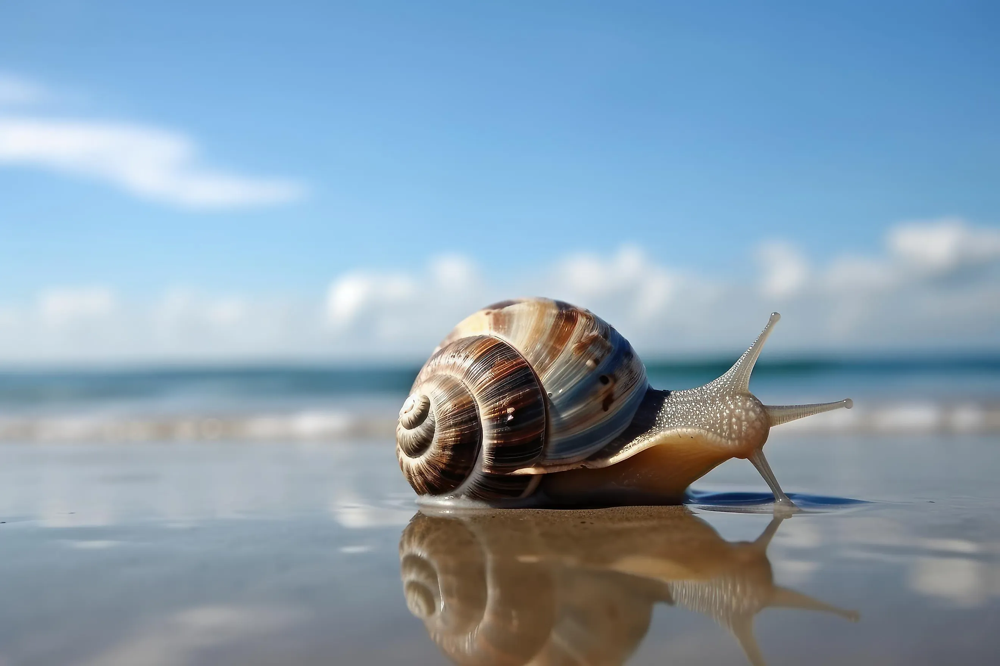
Snail
Snails are gastropod mollusks found in diverse habitats worldwide, from terrestrial to freshwater and marine environments. They are characterized by their spiral-shaped shells and muscular foot used for movement. Snails have a single, coiled shell or, in some species, no shell at all. They are herbivores, feeding on plants, algae, and decaying matter, while some species are predators. Snails play essential roles in ecosystems as decomposers, recyclers of nutrients, and prey for numerous animals. They have adapted to various environmental conditions, displaying diverse behaviors and reproductive strategies. Despite their small size, snails contribute significantly to biodiversity and ecosystem functioning.
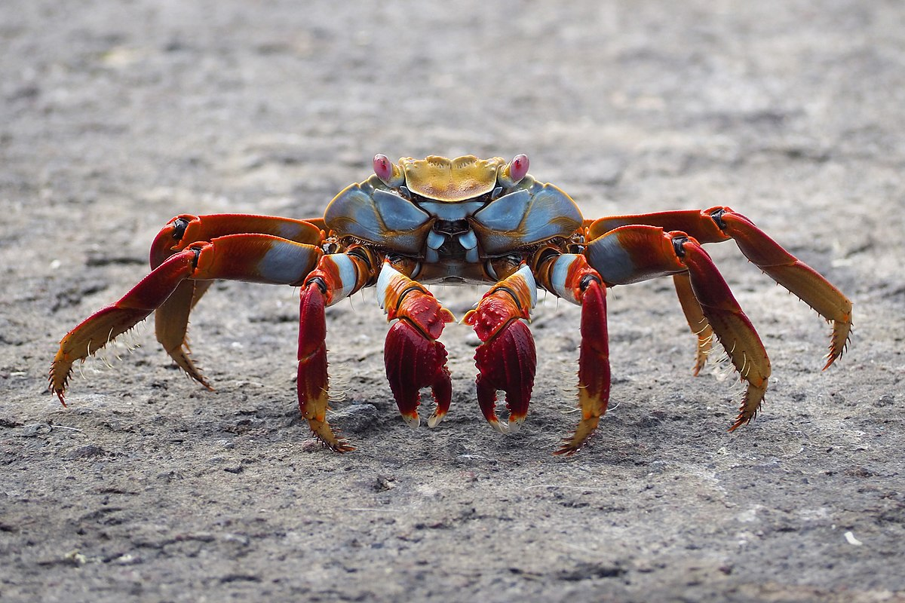
Crab
Crabs are crustaceans found in oceans, freshwater, and on land across the globe. They have a hard exoskeleton, typically with a broad, flattened body and ten legs, including claws. Crabs are highly adaptable predators and scavengers, feeding on a variety of foods such as algae, mollusks, small fish, and detritus. They play a crucial role in marine and terrestrial ecosystems by controlling populations of prey species and recycling nutrients. Crabs are also important economically and culturally, being harvested for food and used in scientific research. Their diverse adaptations and behaviors make them fascinating subjects in biology and ecology studies.
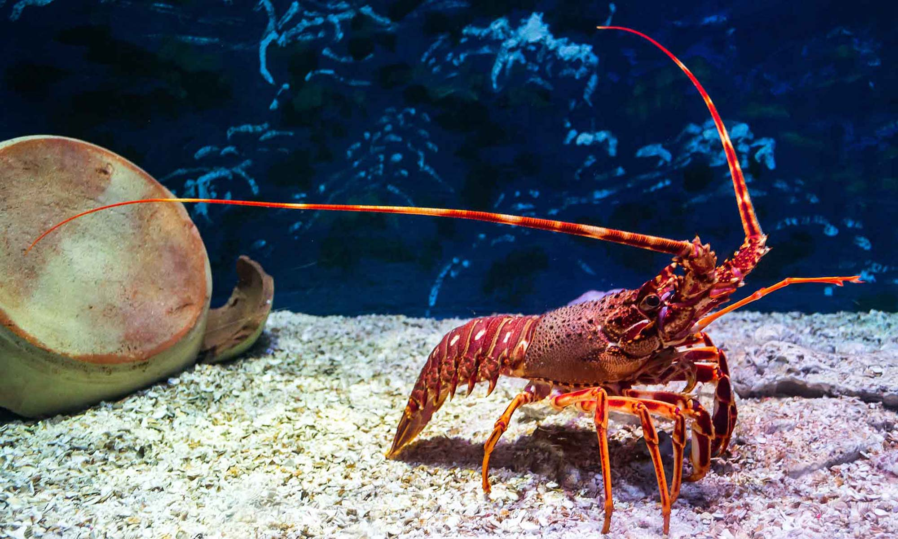
Lobster
Lobsters are large marine crustaceans found in cold and temperate waters around the world. They have a hard exoskeleton, ten legs, and prominent claws used for defense and catching prey. Lobsters are omnivorous scavengers, feeding on fish, mollusks, crustaceans, and plant material. They play a crucial role in marine ecosystems by controlling populations of prey species and scavenging on organic matter. Lobsters are also commercially valuable and widely consumed as seafood. Due to their economic importance, lobster fisheries are carefully managed to ensure sustainable harvesting practices and to protect populations from overexploitation.
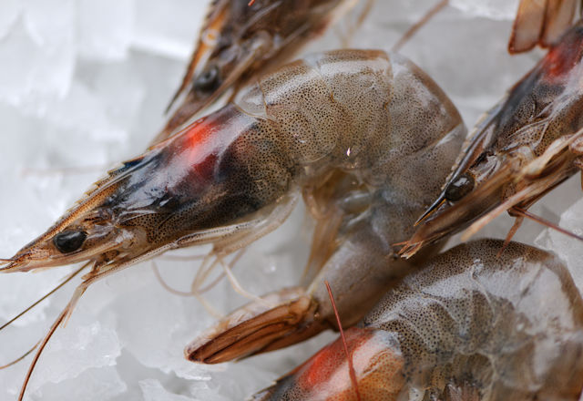
Shrimp
Shrimp are small, decapod crustaceans found in various aquatic habitats worldwide, from freshwater to saltwater environments. They have elongated bodies with segmented tails and multiple pairs of legs, including specialized front claws used for feeding and defense. Shrimp are omnivorous scavengers, feeding on algae, plankton, small fish, and detritus. They play a crucial role in aquatic ecosystems by recycling nutrients and serving as a vital food source for many larger marine animals, including fish, birds, and humans. Shrimp are commercially important and widely harvested for seafood consumption, contributing significantly to global fisheries and aquaculture industries.
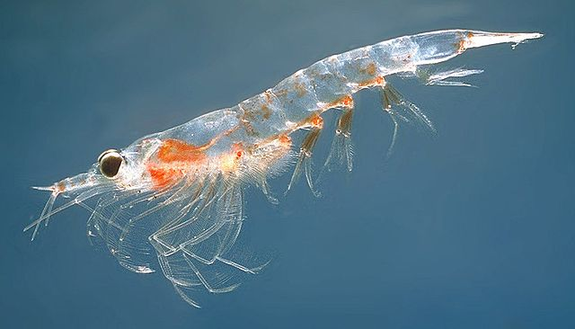
Krill
Krill are small, shrimp-like crustaceans found in all oceans, primarily in cold waters. They are an essential component of marine ecosystems, serving as a key food source for many larger marine organisms, including whales, seals, and fish. Krill are filter feeders, consuming phytoplankton and zooplankton by filtering seawater through specialized appendages. They form massive swarms that play a crucial role in the ocean's nutrient cycling and carbon sequestration processes. Krill are also commercially harvested for use in aquaculture feeds, nutritional supplements, and pharmaceuticals. Despite their ecological importance, krill populations face threats from climate change, overfishing, and habitat loss.
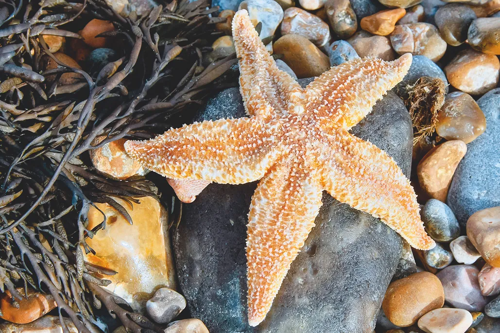
Starfish
Starfish, also known as sea stars, are marine invertebrates found in oceans worldwide. They have a distinctive star-shaped body with multiple arms radiating from a central disc. Starfish are carnivorous predators, using their tube feet and suction-cup-like structures to pry open and consume shellfish, mollusks, and other small marine animals. They play a crucial role in marine ecosystems by controlling populations of prey species and recycling nutrients through their feeding activities. Starfish are also capable of regenerating lost limbs, making them resilient to predation and environmental challenges. Despite their resilience, starfish populations face threats from habitat destruction, pollution, and climate change.

Sea Urchin
Sea urchins are spiny, globular marine animals found in oceans worldwide, from shallow waters to deep-sea environments. They have a hard, spherical shell covered in movable spines that provide protection against predators. Sea urchins are herbivorous grazers, feeding primarily on algae and seaweed. They play a critical role in marine ecosystems by controlling algal growth and maintaining the health of coral reefs and rocky habitats. Some species of sea urchins are also commercially harvested for their roe, known as uni, which is considered a delicacy in seafood cuisine. However, overharvesting and habitat destruction pose significant threats to sea urchin populations.

Sea Cucumber
Sea cucumbers are marine invertebrates found on the ocean floor worldwide, from shallow coastal waters to deep-sea environments. They have elongated, cylindrical bodies with soft, leathery skin and a distinct oral and anal opening at opposite ends. Sea cucumbers play a crucial role in marine ecosystems by recycling organic matter and nutrients through their feeding habits. They are detritivores, feeding on decaying organic matter, plankton, and small particles in the sediment. Some species of sea cucumbers are also harvested for use in traditional medicine and seafood cuisine. However, they face threats from overfishing, habitat destruction, and climate change, jeopardizing their populations and ecological roles.

Brittle Star
Brittle stars are marine echinoderms related to starfish, found in oceans worldwide. They have a central disk with long, slender arms that radiate outwards, often resembling a starfish. Unlike starfish, brittle stars have long, flexible arms that they use for locomotion and capturing prey. They are active predators and scavengers, feeding on small marine animals and organic matter. Brittle stars play a crucial role in marine ecosystems by recycling nutrients and contributing to the diversity of benthic communities. They are resilient to environmental changes and can regenerate lost arms, aiding in their survival in challenging ocean conditions.
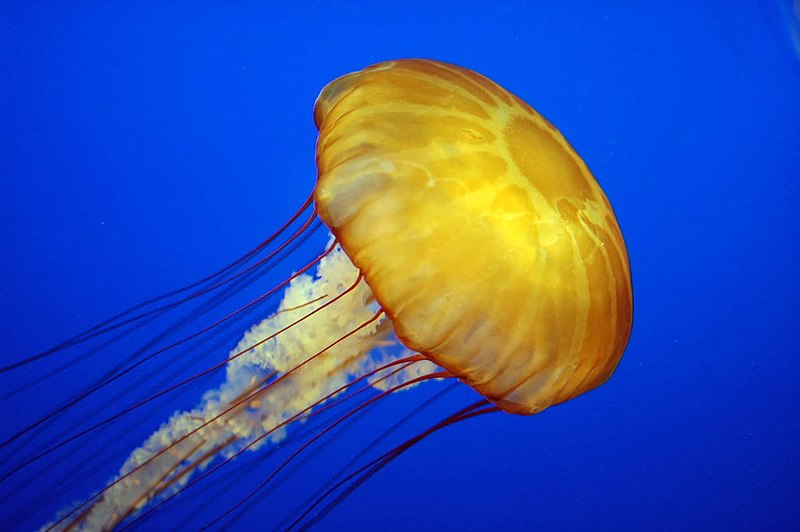
Jellyfish
Jellyfish are gelatinous, umbrella-shaped creatures found in marine environments worldwide. They are composed mostly of water and have a simple body structure without a brain or central nervous system. Instead, they have a nerve net that coordinates their movements and responses to stimuli. Jellyfish use their tentacles equipped with stinging cells called nematocysts to capture prey, primarily small fish and plankton. They play a significant role in marine food webs as both predators and prey. While some jellyfish species are harmless, others can deliver painful stings to humans. Climate change and overfishing can contribute to jellyfish blooms, impacting marine ecosystems.

Corals
Corals are marine invertebrates that form the foundation of coral reefs, one of the most diverse ecosystems on Earth. They secrete calcium carbonate skeletons that create the intricate structures of reefs. Corals have a symbiotic relationship with photosynthetic algae called zooxanthellae, which provide them with nutrients and vibrant colors. Corals are vital for coastal protection, providing habitats for numerous marine species, including fish and invertebrates. They are also sensitive to environmental changes, such as rising sea temperatures and pollution, which can lead to coral bleaching and reef degradation. Conservation efforts focus on protecting coral reefs to preserve their biodiversity and ecological functions.
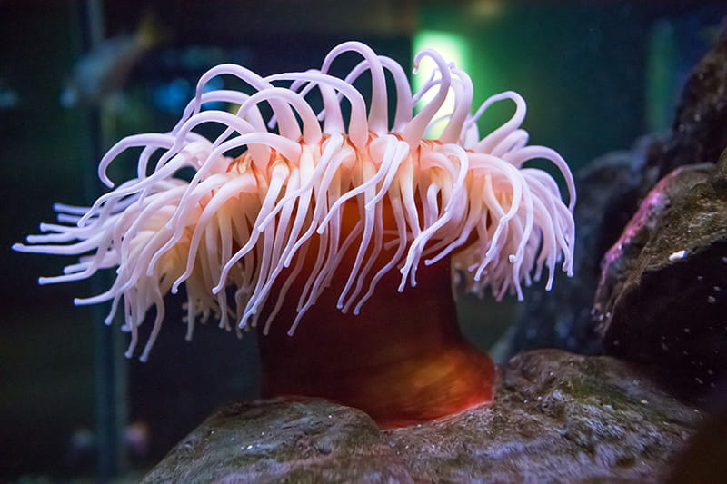
Anemones
Anemones are marine animals known for their colorful, flower-like appearance and stinging tentacles. They are closely related to corals and jellyfish, belonging to the phylum Cnidaria. Anemones attach themselves to rocks or other substrates using a sticky foot called a basal disc. They have a central mouth surrounded by tentacles armed with stinging cells called nematocysts, used for capturing prey such as fish and shrimp. Anemones also have a symbiotic relationship with photosynthetic algae, providing them with nutrients. They play a vital role in marine ecosystems by providing habitat and food for various marine organisms, contributing to biodiversity.

Sea Sponge
Sea sponges are simple, multicellular aquatic animals found in marine environments worldwide. They lack true tissues and organs, consisting of a porous body with numerous pores and channels that filter water for food and oxygen. Sponges come in various shapes, sizes, and colors, often resembling plants or rocks. They play a crucial role in marine ecosystems by filtering large volumes of water, removing particles and organic matter, and recycling nutrients. Some species of sea sponges produce bioactive compounds that have potential biomedical and pharmaceutical applications. Despite their ecological and economic importance, sea sponges are vulnerable to pollution, habitat loss, and climate change impacts.
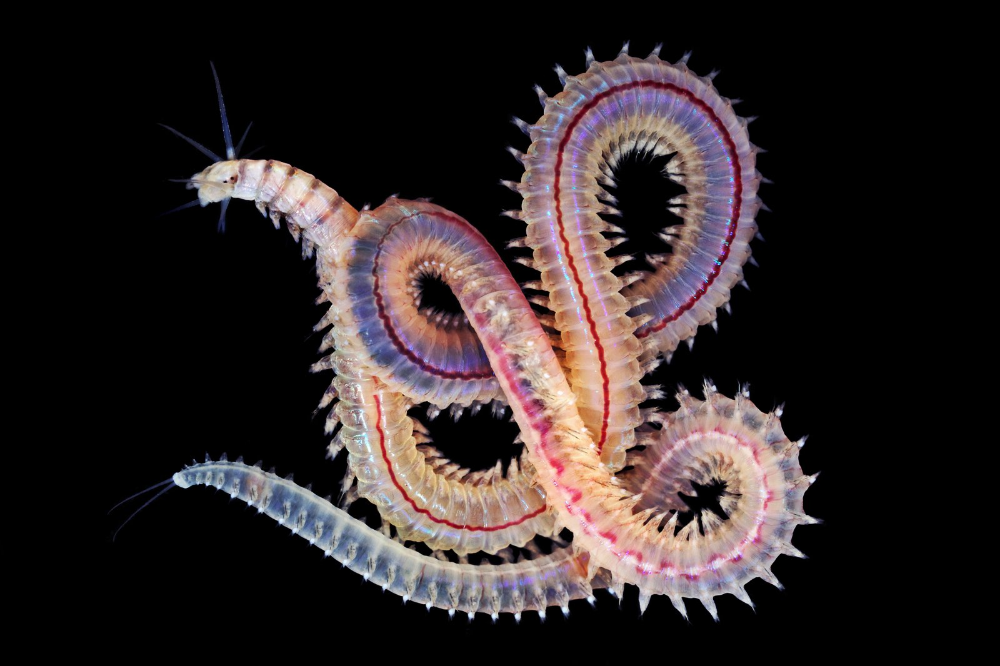
Polychaetes
Polychaetes, or bristle worms, are a diverse group of marine annelid worms found in oceans worldwide, from shallow waters to the deep sea. They are characterized by their segmented bodies with bristles called chaetae, which aid in movement and defense. Polychaetes exhibit a wide range of feeding strategies, including filter feeding, scavenging, and predation. They play essential roles in marine ecosystems by cycling nutrients, aerating sediment, and serving as food for various marine organisms. Some species of polychaetes are also indicators of environmental health, as they are sensitive to changes in water quality and habitat degradation.
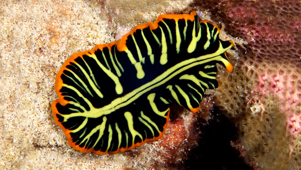
Flatworms
Flatworms, or platyhelminthes, are a diverse group of invertebrates found in marine, freshwater, and terrestrial habitats worldwide. They are characterized by their flattened, ribbon-like bodies without a body cavity or circulatory system. Flatworms exhibit a wide range of sizes and colors, from microscopic species to larger marine forms. They have a simple nervous system and are capable of regenerating lost body parts. Flatworms play various ecological roles, including scavenging, predation, and parasitism. While some flatworms are beneficial in ecosystems, others can be harmful parasites of humans and animals. Conservation efforts focus on understanding their roles and managing their impacts on biodiversity.
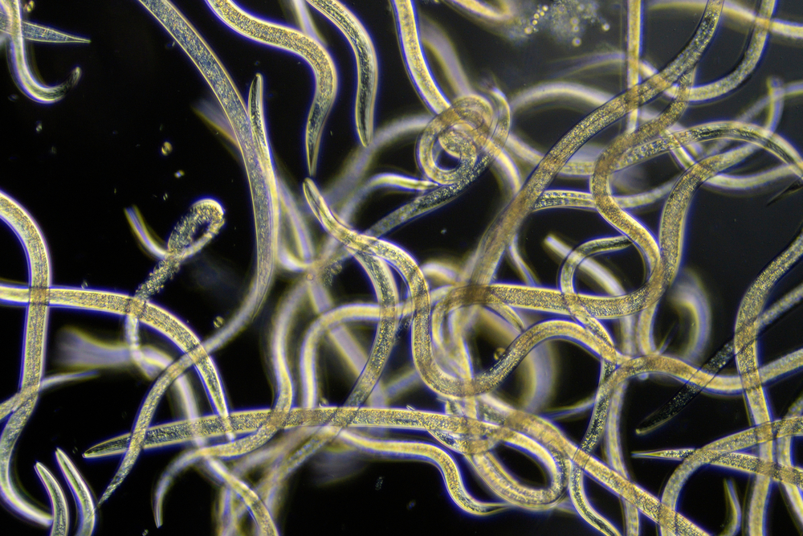
Nematode
Nematodes, also known as roundworms, are a diverse group of worms found in virtually every environment on Earth, including marine, freshwater, and terrestrial habitats. They are cylindrical, unsegmented worms with a simple body structure and a complete digestive system. Nematodes exhibit incredible diversity, with species ranging from microscopic parasites to larger free-living forms. They play important roles in nutrient cycling, decomposition, and soil health. Some nematodes are beneficial as natural predators of pest insects, while others can be harmful parasites of plants, animals, and humans. Understanding nematode ecology and biodiversity is crucial for managing ecosystems and agricultural systems sustainably.